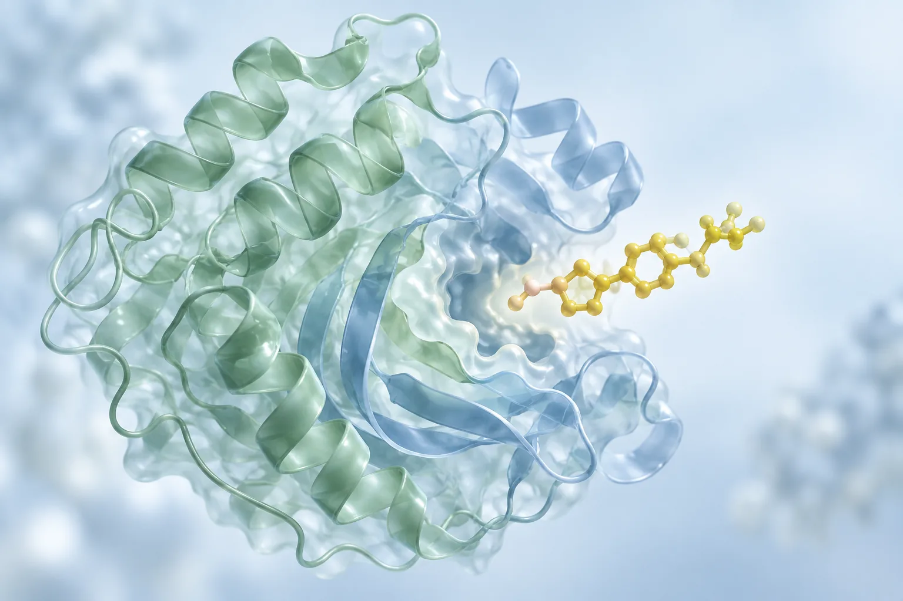

输入靶蛋白名称、突变信息和氨基酸序列。
AI DRUG TARGET SCREENING · 01
基于生物大模型的药物重定位与靶点智能筛选平台
从蛋白序列到候选药物，让 AI 帮助科研团队更快形成值得进一步验证的实验优先级。
Published
Reproduced
Live Prediction
Experimental Validation
Protein Sequence
SMILES Library
TSEDTA
MREDTA Consensus
Affinity Ranking
CSV Report
Binding Residues
Protein Sequence
SMILES Library
TSEDTA
MREDTA Consensus
Affinity Ranking
CSV Report
Binding Residues
上传 SMILES CSV 或使用演示候选药物库。
TSEDTA 主模型推理，MREDTA 用于后续一致性比较。
输出候选排序、分布图、详情和报告。
MOLECULAR PERSPECTIVE从分子视角，
从分子视角，
探索新的可能。
连接蛋白序列、分子表示与候选排序。
让计算筛选成为下一步研究的起点。

拖动旋转 · 滚轮缩放合成结构演示
02 · SCREENING CONSOLE
Smart Screening
第一版使用明确标注的演示数据；真实模型接口接入后切换为 Live Prediction。
03 · RANKING OUTPUT
Screening Result
EGFR T790M · computational prediction · pKd scale
| Rank | Drug | Affinity | Priority | Evidence |
|---|
Affinity Distribution
Top-K Ranking
SMILES: CCOc1ccc2nc(S(N)(=O)=O)sc2c1 · Rank #1 · TSEDTA 9.42 · MREDTA 9.17 · Agreement 92%
04 · EVIDENCE SYSTEM
Model Evidence
论文结果、团队复现、实时推理和实验验证分层展示，避免把计算候选写成药效结论。
SMILES Transformer + ESM2 冻结特征提取，LLM-Fusion 与 Dual-Trans 完成 DTA Prediction。
Live Prediction 主引擎BERT 与 Transformer 分子表示编码器，第二阶段作为多模型一致性比较模块。
Model Consensus结合 attention map 标注潜在 binding residues，并映射到 3D 蛋白结构视图。
Evidence Layer
05 · PUBLIC DATASETS
Data Center
第一版不使用医院患者数据，使用公开数据与合成演示数据启动产品闭环。
Davis
KIBA
Metz
BindingDB
Synthetic Demo Data
Screening Report
报告记录输入序列、候选库、模型版本、数据量纲、运行模式、Top-K 排名和科研用途免责声明。